One bright morning, the Fox saw a Crow sitting on a tree branch with a bit of cheese in her beak. “No need to search any farther,” thought sly Master Fox. “Here is a dainty bite for my breakfast.”

What a charming creature she is!
— the Fox, flatteringUp he trotted to the foot of the tree and cried, “Good-morning, beautiful creature!” He praised her shining feathers, splendid wings, and lovely form, declaring that such a wonderful bird must have a beautiful voice. “Could she sing just one song, I know I should hail her Queen of Birds.”
The Crow, delighted by his flattery, opened her beak to caw, and down fell the cheese straight into the Fox’s mouth. “Thank you,” said Master Fox sweetly as he walked off. “Though it is cracked, you have a voice sure enough—but where are your wits?”
The flatterer lives at the expense of those who will listen to him.